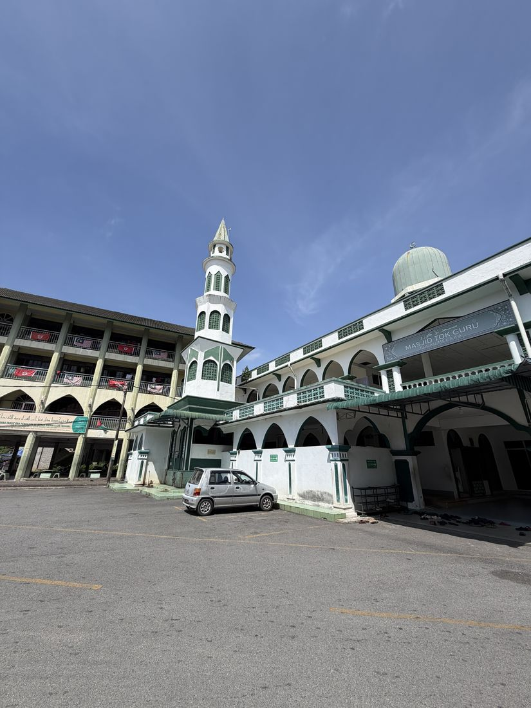
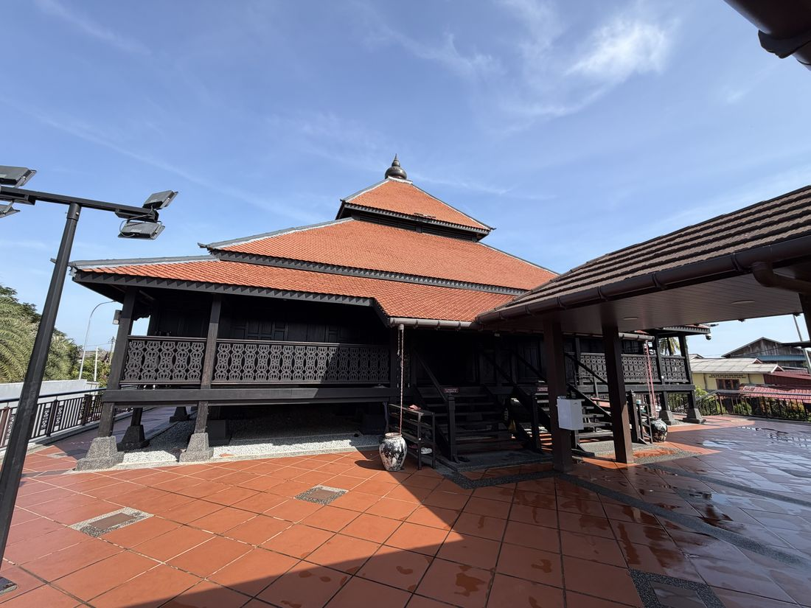
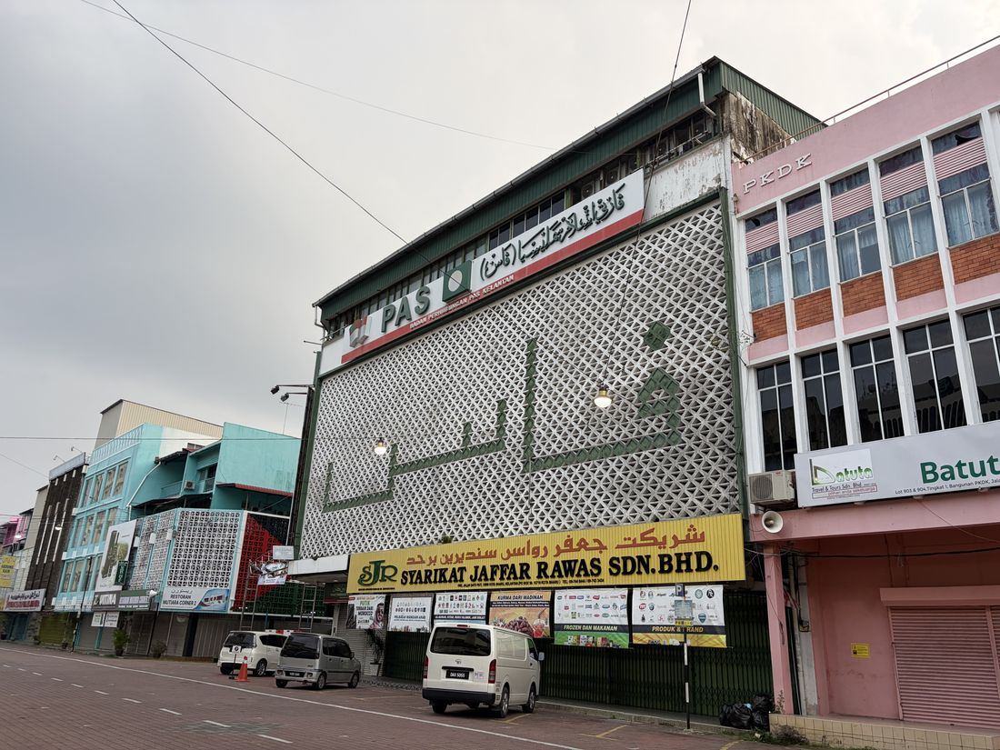
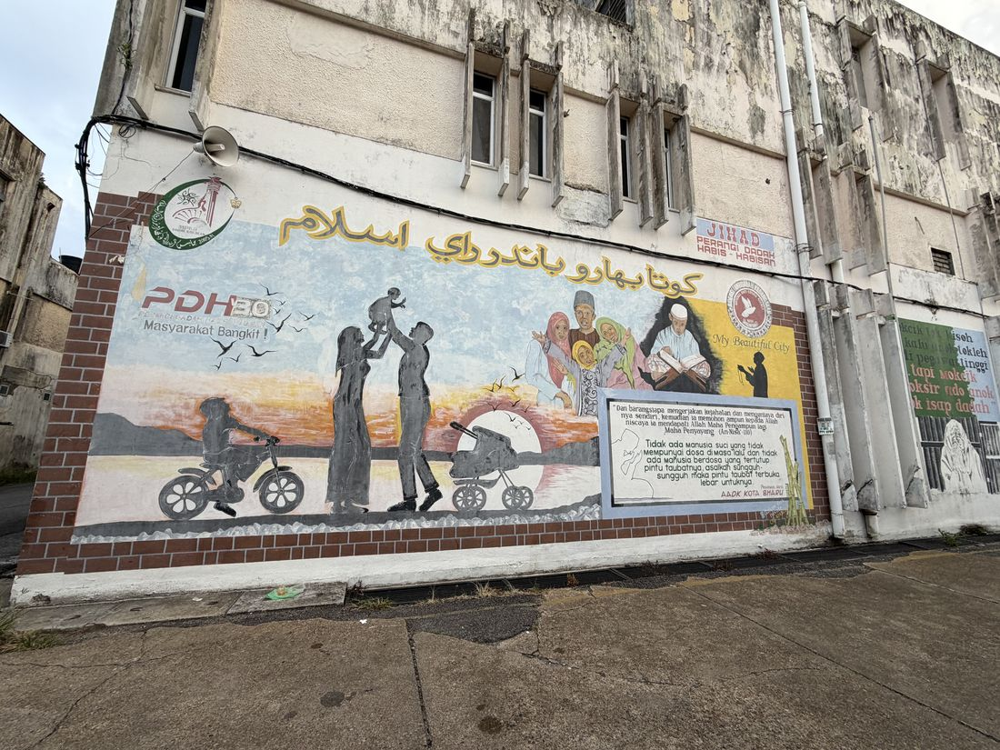
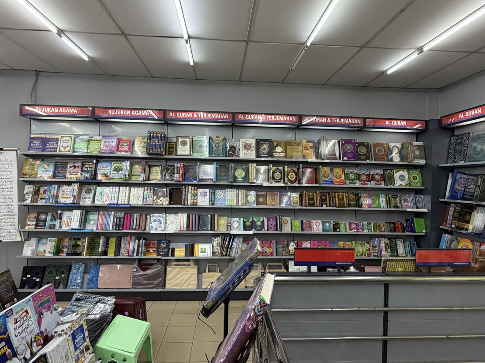
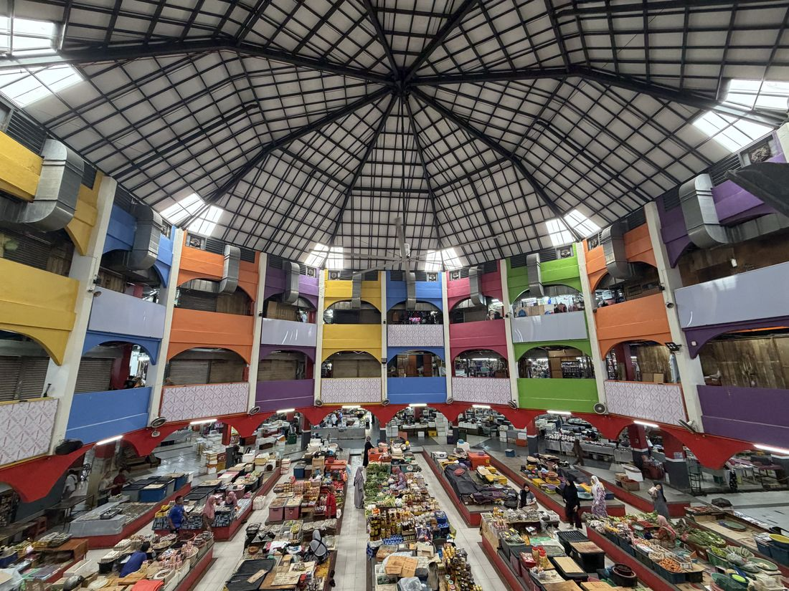
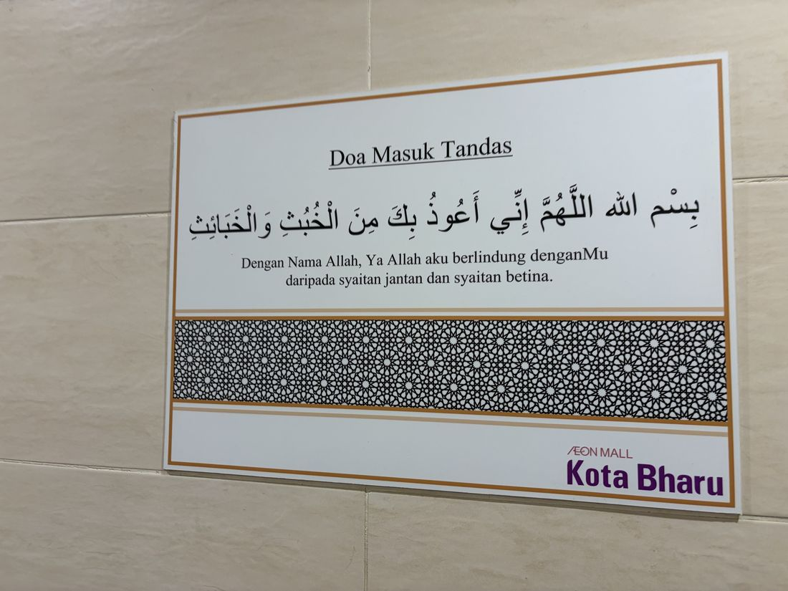

In the summer of 2026 I carried out research in Malaysia, moving from Kuala Lumpur
to Kota Bharu in August for three weeks of fieldwork. The work centred on traditional
educational institutions and sites of Islamic authority — pondok, among them the
mosque where Nik Abdul Aziz Nik Mat once taught — and on interviews conducted
around the PAS party offices. I also met constituency representatives and religious
teachers, asking who in everyday life is held to carry religious authority.

Masjid Tok Guru, Pulau Melaka — where Nik Abdul Aziz Nik Mat taught, beside his house.

Masjid Kampung Laut, among the oldest surviving mosques in Malaysia: timber, tiered roof, no dome and no minaret.

The PAS Kelantan liaison office, above a shophouse row in central Kota Bharu.

A street mural in Kota Bharu, Bandar Raya Islam: the national anti-drugs campaign framed as jihad, closed with a verse on repentance.

A Kota Bharu bookshop, where religious titles take nearly the whole wall.

Pasar Siti Khadijah, the central market, long run by women traders.

The doa for entering the lavatory, posted outside the washrooms at AEON Mall Kota Bharu.